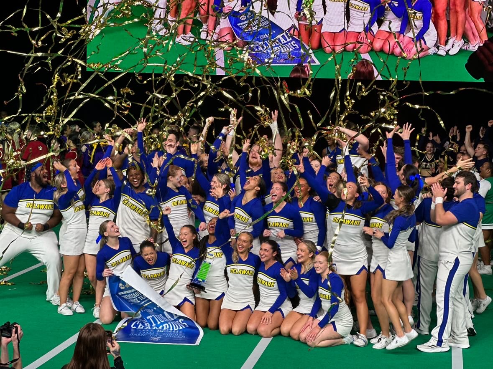

Dasia English
Get to know me :)
Hello everyone! I am excited to be in this program and further my education in tech. I graduated from the University of Delaware majoring in Entrepreneurship, and minored in Disability Studies. Not to mention I was on the Coed Cheer team and named captain my Senior year. I have 19 years of experience in cheerleading. With that experience, I also have won a lot of cool things in those years. My most recent accomplishment is being a 4x Collegiate Champion in a row.
2024 Game Day Champions (6peat)
Current jobs
- First State Gymnastics
- Insructor/Front Desk
- M.O.T All Stars
- Coaching a Mini level 1 prep Team
- Odessa High School Cheer Coach
- JV Cheer Team
- Private Lessons (Personal business)
- Tumbling, stretching, and Jump 1-on-1's
Support
I am a hands-on-learner. I also learn from constructive feedback. I like to know when I am wrong. Mainly because I want to continuously make myself better. I also like to get credit when my credit is due.
Contact me
I am available from 9am-9pm. The best time is before 12pm
Goals for the coming Year
Finding my career job in Tech. I also would like my cheerleading team to be undefeated.